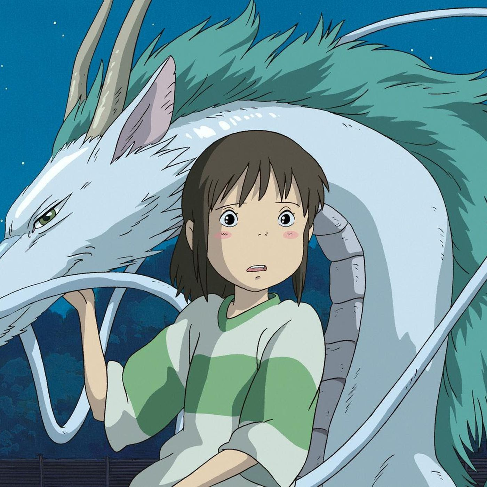
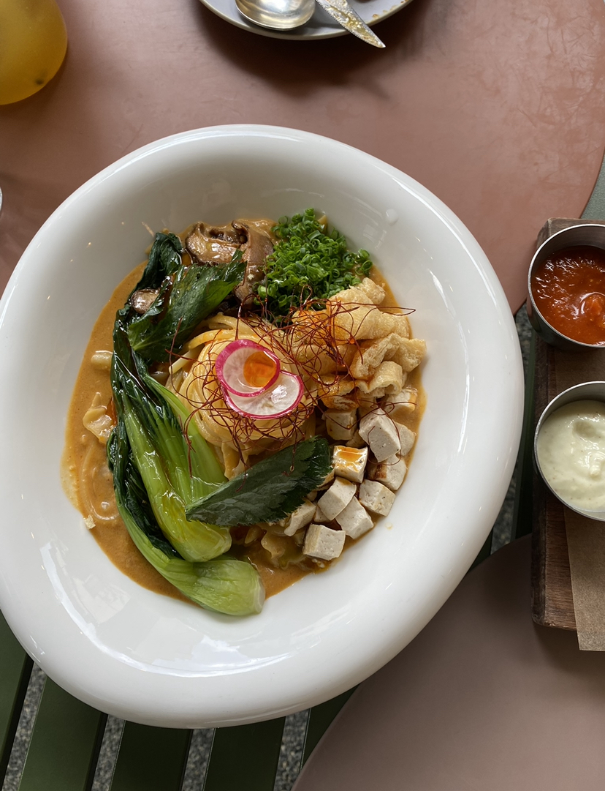
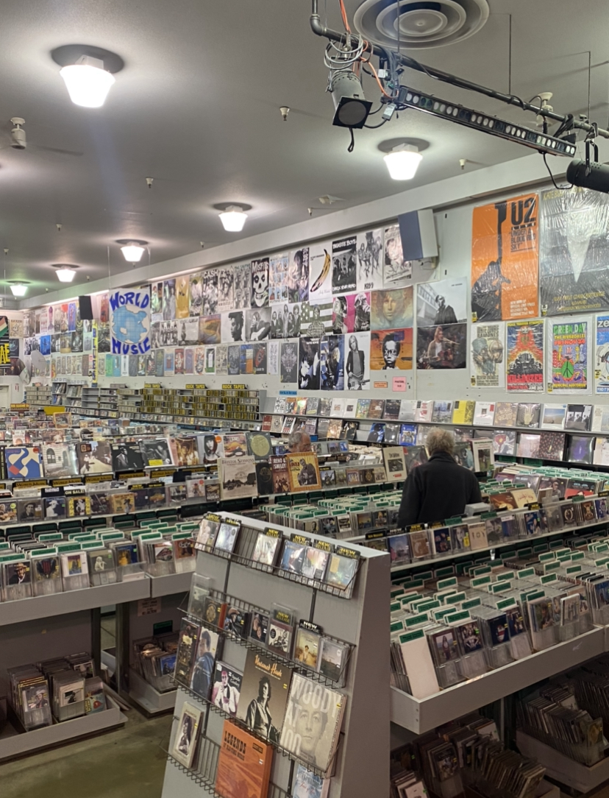

{ About Me }

#배움 #성장 #도전
"비주얼 스토리텔러"로서 성장하고자 다양한 분야에서 관련된 경험과 인사이트를 쌓아왔습니다.
👩🏻🎨 이야기를 직관적으로 담을 수 있는 매력에 이끌려 Freelance 일러스트레이터, 그래픽 디자이너로 시작
👩🏻💻 이커머스의 컨텐츠, 퍼포먼스 마케터로서 사용자의 편의성을 고려한 서비스 측면의 스토리텔링에 대해 고민하고,
🎬 애니메이션 스토리 프로듀서로서는 어떻게 하면 더 많은 사람들에게 더 접근성 좋은 Story를 배포할 수 있을지 고민하게 되었는데요
"지금 우리 사회에서 우리와 가장 밀접하게 interact 하는, 웹이라는 공간에 우리의 삶을 더 낫게 해주는 메시지를 어떻게 담을 수 있을까" 라는 질문을 탐구하기 위해 또 한 번의 도전을 하게 되었습니다.
{ Favorites }



animation food travel
{ Contact Me }
*Note: 연락하며 지내요! :)